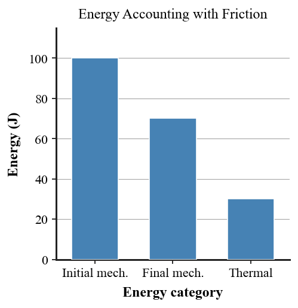

Six-question DOK check for Section 4.4: 2 DOK 1, 2 DOK 2, 1 DOK 3, and 1 DOK 4.
What is mechanical energy in the context of kinetic and potential energy?
If friction is negligible, what happens to the sum of KE and PE as a coaster moves along a track?
A pendulum has 60 J of gravitational PE at the top. Ignoring friction, determine its KE at the bottom if the reference PE there is 0 J.
Use the friction energy chart to explain why a later state can have less KE+PE but the same total energy when thermal energy is included.

A student says, “When a car stops, its energy is gone.” Critique the claim by tracing kinetic energy into thermal energy, sound, and deformation.
Audit the energy of a roller coaster from the first hill to the braking zone. Track PE, KE, thermal energy, and sound; explain where mechanical energy decreases; and defend conservation of total energy.